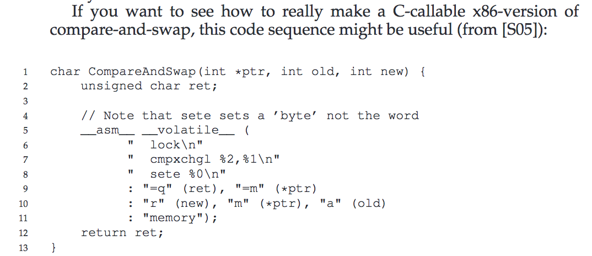

I've been reading Operating Systems: Three Easy
Pieces. I highly recommend the book if
you're cool fiddling with C a bit. Actually, scratch that: I recommend the book
if you ever write code that runs on a server or any other linux/osx environment,
especially if you feel a little out of your depth with C. The code examples
are not that intimidating, even if you don't know from typecasting or a pointer
(okay, learning the difference between foo, *foo and &foo is useful, but
not knowing it doesn't prevent you from getting the gist of the code samples),
and getting a deeper understanding of the environment your code works in will
make a lot of known unknowns come into a bit more focus. Honest.
The first of the three parts was memory virtualization: that is, how computing
time and resources get divvied up amongst processes. There was some fascinating
stuff in there: the API for forking a new process, for instance, is weirder and
cooler than I expected, and learning the topography of the boundary between the
OS and application code (such as ls or Google Chrome.app) is rad. And then
there are parts that are totally internal, though vital, to the kernel. Nothing
against free space management, segmentation, or the five whole chapters on
memory paging, but I'm just not as interested in the kernel's implementation as
its interface.
I kept wondering if I would be better off just jumping straight to concurrency, because that's what I was really pumped to learn. Would I be missing out on some logically necessary information if I skipped them?? (Nope.) Learn from my mistake and jump to the shit you find interesting, because someday you're going to die. So: locks!
I Don't Need No Stinkin' Lock
Locks are what keep multiple threads, running in parallel, from fucking each other up when dealing with a shared bit of state. There is almost no operation too small for these little bastards to mess up, given the chance. Take this:
static volatile int counter = 0;
void *mythread(void *arg) {
int i;
for (i = 0; i < 100000; i++) {
counter++;
}
return NULL;
}Because I had to look it up: volatile is a keyword that prevents certain
compiler optimizations from happening, specifically for things like this shared
counter.
So, there's a shared counter and there's a procedure that uses it suitable for giving to a couple threads. I extracted all the code dealing with that shared bit of state:
counter++That's it! A single line, with a single unary operator. How unsafe can THAT be? Let's add some logging and fire up a couple threads:
#include <stdio.h>
#include <pthread.h>
static volatile int counter = 0;
void *mythread(void *arg) {
printf("%s: begin\n", (char *) arg);
int i;
for (i = 0; i < 100000; i++) {
counter++;
}
printf("%s: end\n", (char *) arg);
return NULL;
}
int main(int argc, char *argv[]) {
pthread_t p1, p2;
printf("main: begin (counter = %d)\n", counter);
pthread_create(&p1, NULL, mythread, "A");
pthread_create(&p2, NULL, mythread, "B");
// wait for them fucks to finish
pthread_join(p1, NULL);
pthread_join(p2, NULL);
printf("main: done with both (counter = %d)", counter);
return 0;
}So. counter starts at 0, and then two threads each run counter++ 100,000
times apiece. That makes 200,000, right?
main: begin (counter = 0)
A: begin
B: begin
B: end
A: end
main: done with both (counter = 100745)INTERESTING.
The trouble is that counter++ is three operations, not one:
- Get the value of
counterout of whatever register it's stored in - Increment that value by one
- Store the new value in that register
So p2 reads the value of counter's register at, e.g., 17; then it increments
the value to 18; at the same time as p2 is doing that incrementing, one core
over, p1 reads that same register, which is still 17. In parallel, each adds
one to the value it read and stores that new value in the register, and lo: 17 +
1 + 1 = 18.
Lock That Shit Down
So let's suppose you give a shit about the integrity of basic arithmetic in
your code. The above nonsense won't do at all. I ran it eight times (you can,
too! Just stick the code above in a file (say, bad_math.c), compile it with
something like gcc -o bad_math bad_math.c, and go hog wild), with the following
results:
ABAB 127499
ABAB 144926
ABAB 116942
ABBA 102988
ABBA 100745
ABAB 114188
AABB 200000
ABBA 104161
avg. 126431I'm honestly pretty shocked that one run actually got 200,000. (As a sidenote,
it looks like the ABAB pattern of thread starts/finishes performs better than
ABBA, with respective averages of 125888 and 102631. AABB, of course, will
always get 200,000 (as would BBAA, but A gets kicked off first by
synchronous code).)
So let's lock this shit down. main doesn't need to change at all: we just need
to initialize a commonly available lock, and use it in the mythread procedure
to ensure that only one thread at a time can access the critical section (that's
the term, coined by Dijkstra, for a section of code dealing with shared memory;
here, counter++). Here's the most vanilla implementation for a POSIX system:
static volatile int counter = 0;
pthread_mutex_t lock = PTHREAD_MUTEX_INITIALIZER;
void *mythread(void *arg) {
printf("%s: begin\n", (char *) arg);
int i;
for (i = 0; i < 100000; i++) {
pthread_mutex_lock(&lock);
counter += 1;
pthread_mutex_unlock(&lock);
}
printf("%s: end\n", (char *) arg);
return NULL;
}No need for extra headers; as you probably gathered from the naming, that
locking mechanism is part of pthread.h. When any thread calls
pthread_mutex_lock(&foo) for a lock foo, one of two things happens: if no
one else has the lock, it runs the critical section; or, if another thread has
the lock, it waits for that thread to call pthread_mutex_unlock(&foo) and THEN
does its thing.
As you might expect, this version gets 200,000 every time (but don't believe me...). So what's going on under the hood?
Under The Hood
A huge disclaimer before we start playing around with implementing our own locks: this shit does not work. Checking some value to determine if a lock is in use and updating that value to secure that lock takes multiple operations, and at the application level, there's no way to ensure that that happens atomically. In a real lock, the hardware exposes a prebundled set of operations that can be called from a C API.
Depending on your machine, those prebundled operations might look, if you squint, a little something like this:
typedef struct __lock_t {
int flag;
} lock_t;
void init(lock_t *lock) {
// 0 => lock is available, 1 => lock is held
lock->flag = 0;
}
int compare_and_swap(int *old_ptr, int expected, int new) {
int actual = *old_ptr;
if (actual == expected)
*old_ptr = new;
return actual;
}
void lock(lock_t *lock) {
/* while (compare_and_swap(&lock->flag, 0, 1) == 1) */
while (compare_and_swap(&lock->flag, 0, 1) == 1)
; // do butt-ass nothing until that lock gets released
}
void unlock(lock_t *lock) {
lock->flag = 0;
}This is a shitty lock for a few reasons:
- If the lock is taken, the thread just wastes CPU cycles until the CPU scheduler decides to let the locking thread finish its work
- It's possible to have a thread that "starves": i.e. never, ever gets the lock
- It does not work.
But how badly does it not work?
ABAB 156000
ABAB 103114
ABAB 129168
ABBA 101519
ABBA 114152
ABAB 103095
ABBA 100576
ABAB 101809
avg. 113679So, I mean, that's a worse average than no lock at all, but there was that fluky 200,000 in there. Without the outlier, it would look a lot wors-
avg. 115921Oh. From an analytical perspective, there are more steps in compare_and_swap
than in counter++, so there are more places for a malicious CPU scheduler to
fuck with things; from a statistical perspective, we're nowhere near solid
ground for declaring a winner in the contest of "no locks vs useless locks";
from an engineering perspective, please just use pthread_mutex_t locks.
There is a glimmer of hope in the book before we totally close the book on software locking:

Seems easy enough. Take the busted lock, swap in the new CompareAndSwap
implementation, however the fuck that works (looks like its evaluating literal
strings as assembly language, but I'm in way over my head here), and give that a
test run:
ABAB 141034
ABAB 128868
ABAB 149149
ABAB 133336
ABAB 165496
ABAB 130632
ABAB 163608
ABAB 163309
avg. 146929Not half bad*!
* Almost exactly half bad
That's all I got rght now on locks.
A Brief Aside About C
Working in C feels like working with a database to me: the fundamental way to define the shape of your data is a struct: a behaviorless mapping of typed data fields to names, just like a table in a relational database.
Now, it's more complicated than that, of course, and C is a good bit more expressive than SQL. For instance, you could use the convention of pointing certain fields at integers that are pointers to the memory address of functions and use them to call those functions (I believe that's how C++ classes work under the hood, but don't quote me on that as an authority).
Stuff In This Chapter That I Left Out
- Various tradeoffs in balancing fairness and performance while maintaining mutual exclusion (thus, incidentally, the term "mutex")
- Some interesting historical locking mechanisms
- Some background on what the hardware does and doesn't do, and what that means for the OS
- A cool-ass locking implementation from the linux kernel that tracks both the status of the lock and the size of its queue with a single integer